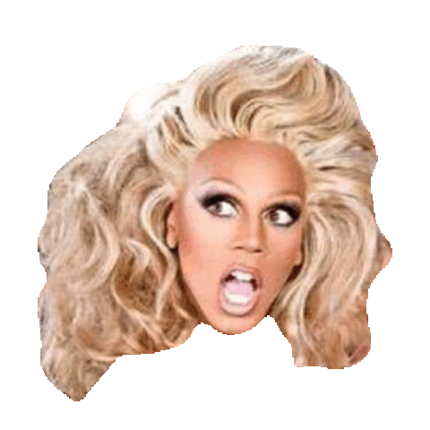

The
Wiki!

Memes!
One of our favorite ways to interact with the fans is to see what kinds of memes they create!
And I gotta admit, y'all are pretty funny.
Here's some of my favorite "mee-mees", as Kennedy Davenport would say!

"Come on season 6, lets get SICKENING!"
As Laganja Estranja entered The Werk Room for the first time at the start of
Ru Paul's Drag Race Season 6, she delivered one of the most iconic lines
throughout the entire show. It's so iconic that many queens have taken
this joke and replaced it with their own season or punchline.
"Miss VANJIEEEEE"
Vanessa Vanjie Mateo was the first queen to be eliminated from Ru Paul's
Drag Race Season 10. As she left the stage, she walked backwards, and
repeated the phrase "Miss Vanjie". She stumped all the queens and the
judges too with this odd moment, and thus the queens began to repeat it.
One episode, a team of queens used "Miss Vanjie" as a safeword in a challenge
so that they knew when to transition from one bit to the next. Miss Vanjie!
"I don't think I belong here..."
Fans were super excited to see Adore Delano on Season 2 of Ru Paul's
Drag Race All Stars Season 2. However, on the second episode, she decided
to voluntarily leave after harsh comments from Michelle Visage. Adore and
Michelle were previously very close friends, even touring the country together,
so the sudden switch in behavior was too much for her. After Michelle tried to
convince her to stay, Adore couldn't do it. At first, the moment was very sensitive
and sad, but since Adore has stated that she regrets dropping out, fans have
turned the previously sad moment into an iconic meme.
"Girl look how orange you f****** look!"
Season 5 of Ru Paul's Drag Race is iconic for many reasons, but one of the
most prevalent reasons why was the beef between Alyssa Edwards and Coco
Montrese. To make a long story short, the pair HATED each others guts,
and fought at every opportunity. To make things worse, the two kept
getting paired up in challenges, so their hatred for each other grew.
While the queens were getting ready for their runway walks, the two
started arguing about their makeup, and the infamous "Girl look how
orange you f****** look" meme was born.
"Your tone seems very pointed right now."
The 4th Season of Ru Paul's Drag Race is another season that is extremely
famous, and lots of iconic moments stem from this season. One of my
personal favorites stems from Untucked in the episode Frenemies. During
this episode, queens Phi Phi O'Hara and Willam had got into an argument.
Phi Phi had quite a lot of things to say to Willam about her talent
levels and outfit choices, and Willam was not having it. Instead of
coming back at Phi Phi with an even nastier counter-argument, she
very calmly delivered the line "your tone seems very pointed right now."
Fans loved it and instantly turned it into a meme.
"IVYYYY WINTERSSSSSS"
Another iconic part of Season 5 of RPDR was Ivy Winters. Every
time that I, Ru, introduced Miss Winters, I always did so by
elongating it. Instead of just saying Ivy Winters, it was always
"IVYYYYY WINTERSSSSSSS". I did this because Latoya Jackson once
introduced Miss Winters like this at a casino in Reno, and I
absolutely loved it. So, every time I adressed Miss Winters,
I simply had to do the same!
"Get those nuts away from mah face!"
On Season Four Episode 4 of RPDR, the queens were faced with
the comedy acting challenge. On this episode, fans agreed that
Latrice Royale was comedy gold. During the episode, she played
a prison guard, and one of the lines that she delivered was
"Get those nuts away from mah face!" The fans absolutely loved
it.